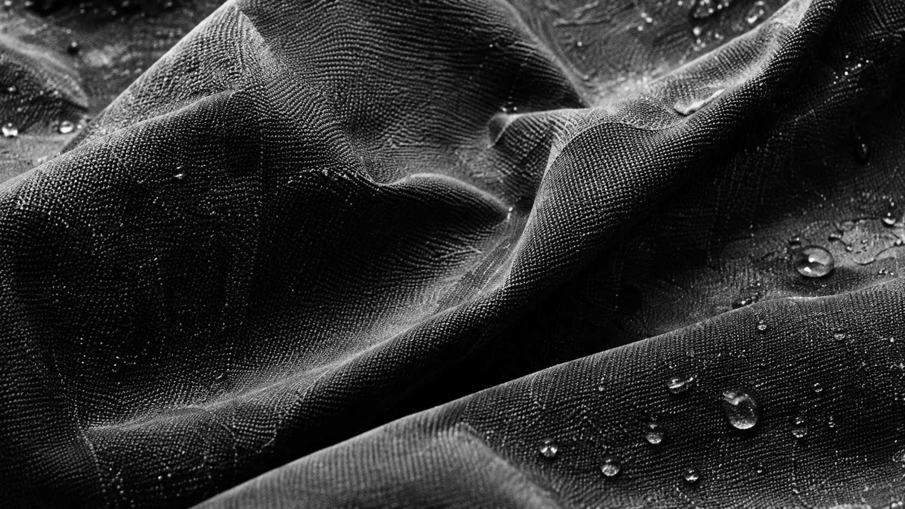
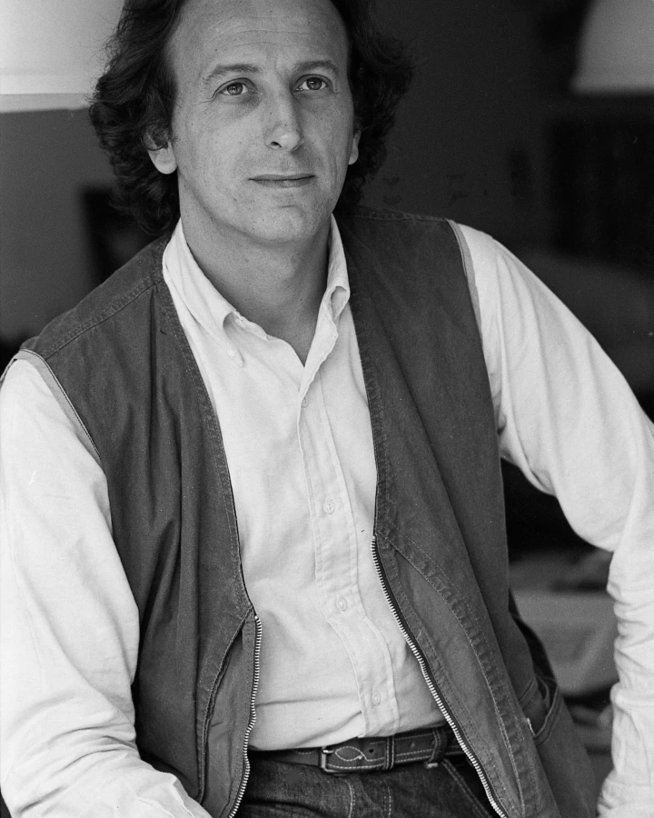
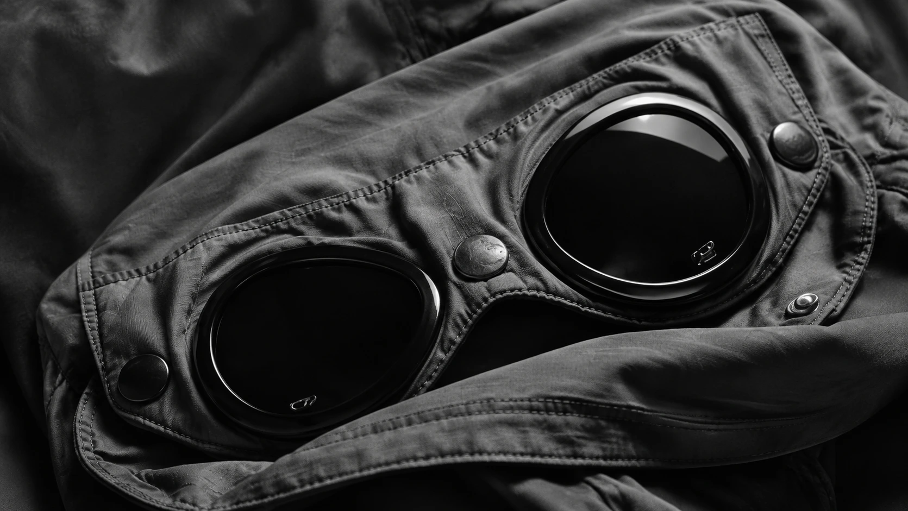
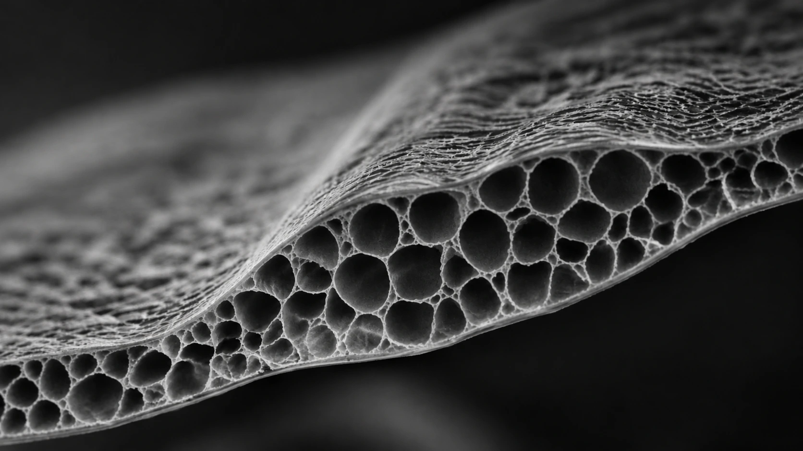

01
EXPERIMENT
실험
소재와 기술의 경계를 넘는 끊임없는 실험으로 새로운 가능성을 탐구합니다.

C.P. Company는 1971년 이탈리아에서 시작된 패션 브랜드로,
기능성 의류와 혁신적인 소재 연구를 바탕으로 독자적인 정체성을 구축해 온
브랜드입니다.

창립자
1971년, 마시모 오스티는 의복에 대한 새로운 시각으로
C.P. Company의 역사를 시작했습니다.
소재와 염색 기술에 대한 끊임없는 실험은 오늘날까지 이어지는 브랜드 특유의 기업가
정신이 되었습니다.
소재와 기술의 경계를 넘는 끊임없는 실험으로 새로운 가능성을 탐구합니다.

실용성을 중심으로 한 구조적 디자인으로 일상의 움직임과 편의성을 생각합니다.

새로운 소재의 연구와 독창적인 접근으로 기존의 기술을 다시 정의합니다.

새로운 컬렉션과 디자인 실험을 통해 브랜드의 가능성을 확장합니다.
기능성과 디자인의 결합을 통해 브랜드의 정체성을 이어갑니다.
스포츠 문화와 일상복의 경계를 넘는 새로운 디자인을 선보입니다.
과거의 디자인과 기술을 현대적인 감각으로 다시 조명합니다.
역사와 철학을 바탕으로 새로운 컬렉션을 전개합니다.
50년간 이어진 혁신과 디자인의 역사를 기념합니다.
고글을 의복에 결합한 디자인으로 브랜드의 상징적인 아이템을 선보입니다.
이탈리아에서 시작된 새로운 시도가 브랜드 역사의 출발점이 됩니다.
BEYOND THE ORDINARY